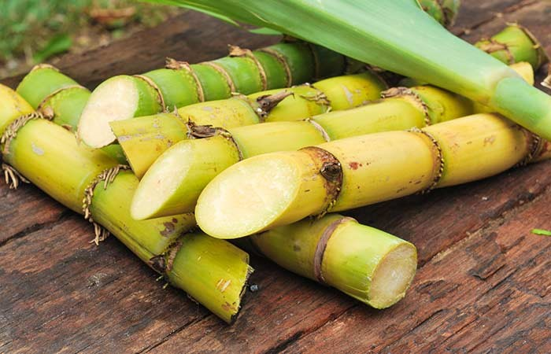
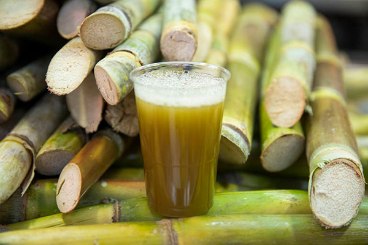
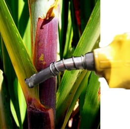

La caña de azúcar, conocida científicamente como Saccharum officinarum, es una planta tropical cultivada principalmente por su tallo, que contiene altos niveles de azúcar. Originaria del sudeste asiático, la caña de azúcar es fundamental en la producción de azúcar y otros productos como el ron y el bioetanol, y juega un papel importante en la economía agrícola de muchos países.
Video obtenido de: TvAgro
Variedad comúnmente cultivada por su alto contenido de azúcar.
Variedad con tallos más gruesos, ideal para la producción de jugo.
Menos dulce que otras variedades, utilizada para la producción de bioetanol.
| Aspecto | Descripción |
|---|---|
| Clima | Prefiere climas cálidos y húmedos, con temperaturas entre 20 °C y 32 °C. |
| Suelo | Necesita suelos bien drenados y ricos en nutrientes. |
| Riego | Requiere riego regular, especialmente en climas secos. |
| Plagas y Enfermedades | Puede ser susceptible a plagas como el barrenador y enfermedades como la roya de la caña. |
| Recolección | Los tallos se cosechan cuando alcanzan la madurez, generalmente a mano o con maquinaria. |